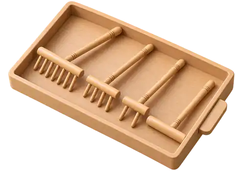

FocusWave / isolated PoC / inset physical drawer
枯山水 · 真实庭具 / 右侧内嵌抽屉
废弃外挂托盘方案。庭具抽屉现在从沙盘右侧木框内部水平滑出：关闭时只露完整木拉手；打开后才看到工具。默认没有选中任何庭具，也不会在沙面悬浮显示耙子；只有从抽屉里选中工具后，实体工具才会进入沙面交互。
← 返回实验目录

0 actions · 尚未选择庭具
打开右侧抽屉选择工具
撤销
重置白砂